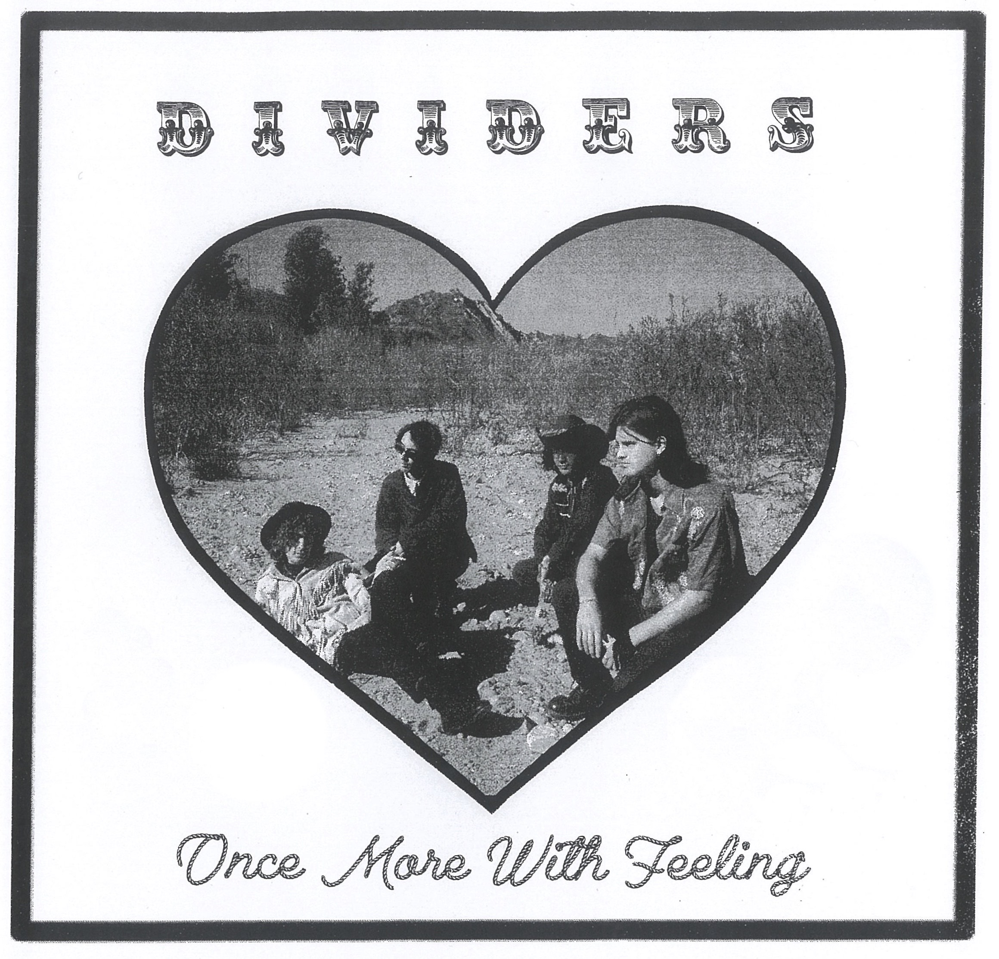
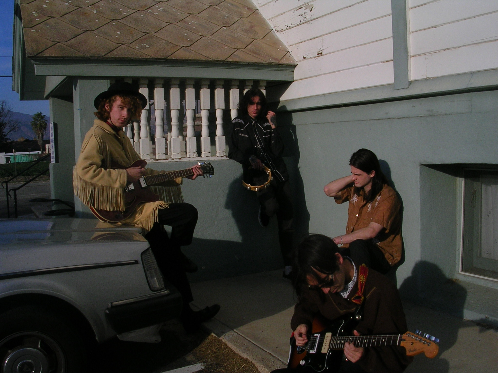
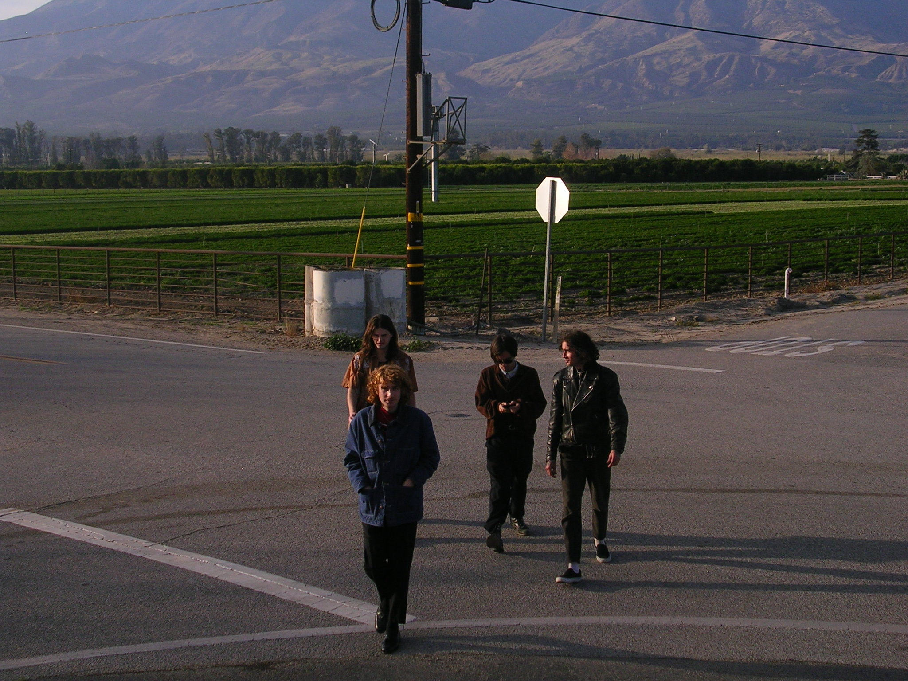
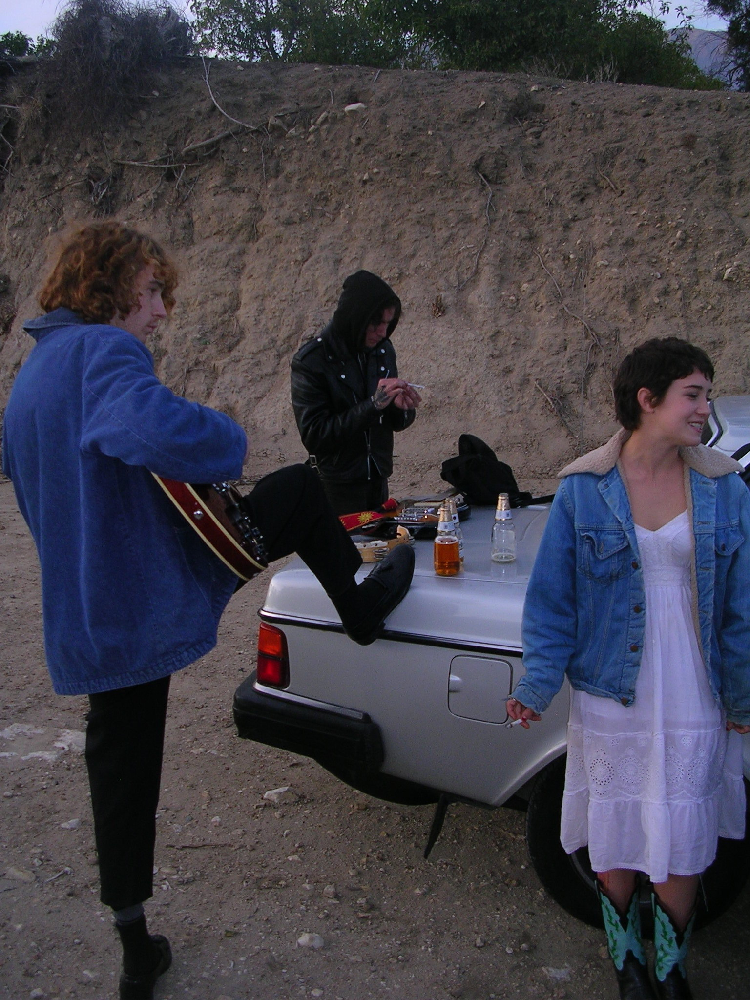
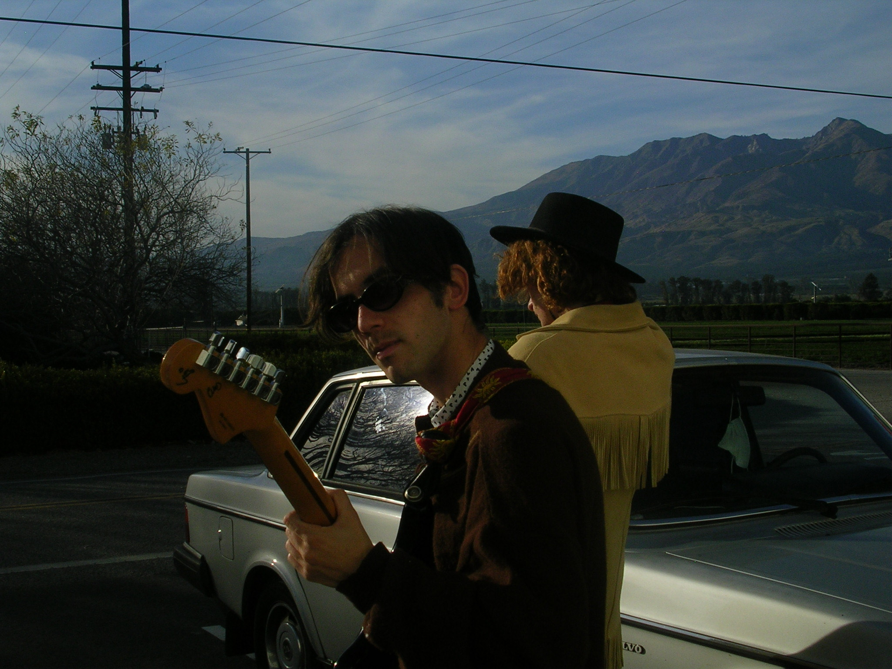
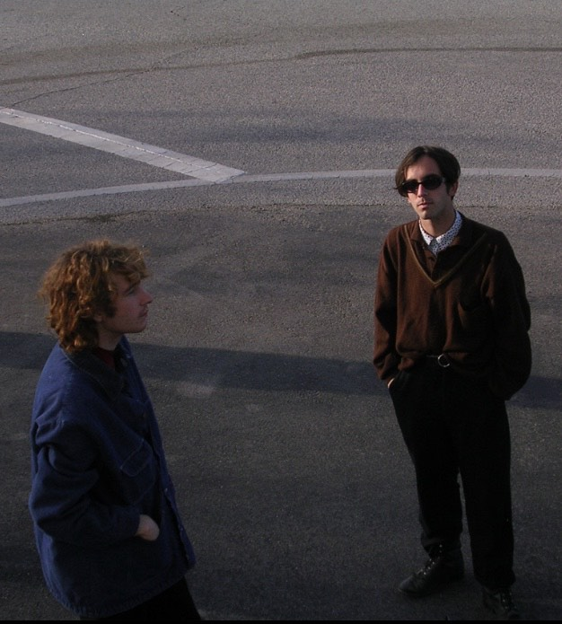

Dividers - Once More with Feeling

Pre-order CD-R $6 Pre-order MP3 $5 Pre-order WAV $5
Track Listing
Release Date March 12, 2021
Catalog Number PV-15
Format CD-R / Digital
Dawn ---- You are driving west on the 10. It's been two days now and the double yellows are wearing thin, but soon you will be back in the city. Back home, to
your dogs and your plants and the bed she used to sleep in
to ----, where the kitchen radio is like a phantom companion in the night
to ----, where the bills rack up incessantly.
It once seemed like a place of such expectation. Each time.
_________________
The extremes of emotional, mental and technical stress that went into the making of these five songs can never be fully known to a person that didn't live them. Yet here is presented at once a labor of love and a document that would not be the same without the turmoil involved in its making. Once More with Feeling is a tribute to American music and a nod to the timeless tradition embodied by the early honky tonk heavy-hitters, but also a product of the disorienting urban sprawl in which it was conceived. Recorded in one all night session at the now defunct Rec Center in the warehouse district of Los Angeles, this tape captures Dividers at its most primal and unadulterated. Line up: lead, rhythm and processed slide guitar, two vocals, bass, drum machine and percussion.




